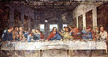

Leonardo Da Vinci
Click on the images to enlarge
1 
2 
3 
4 
6 
8 
9 
10 
11 
12 
15 
16 
17 
18 
Leonardo Da Vinci
(Vinci 1452 – Clos-Lucé 1519)

Introduction
A universal genius, held up as a symbolic figure of the Renaissance, Leonardo da Vinci’s influence goes far beyond this world of painters to which he originally belonged, which his contemporaries saw as his true realm, and of which he remains one of the “beacons”, uneclipsed for soon five centuries. But this halo only serves to highlight the paradoxes of his strange destiny. A Tuscan who pursued, epitomized, and went far beyond the quests of the Florentine quattrocento, he left Florence at the age of thirty without having won his place in the sun there; a spell in Milan marks the peak of his career, and then his wandering old age came to an end on the banks of the Loire. A painter, he produced only a small number of works (sometimes unfinished) — ten or so mentioned in archive documents or contemporary testimony, thirty or so attributable in total, of which over a third are lost. A man of unflagging curiosity, he approached mathematics, the natural sciences, the arts, and technology with equal passion, and has left notebooks, thousands of drawings and sketches, amazing plans — but no great visual or mechanical achievement, no published treatise. Seen from outside, Leonardo appears as a brilliant jack-of-all-trades, an adventurer in pure research, which is all that interested him, and whose temperament paralyses not his creative power, but his will to create. Interpreting the “Vinci mystery” has for a century generated a vast quantity of international literature, critical or lyrical. The brevity of these notes only makes it possible to recall the essential outlines of Leonardo’s career, to evoke the multiple thrusts of his research, and to outline a summary report of his œuvre as an artist.
His life and work
Introduction
Leonardo’s life — tormented, indecisive, without being dramatic like that of a Michelangelo or a Caravaggio — can be divided fairly accurately into three almost equal periods (leaving aside the years of his childhood): the first in Florence, ending in 1482, a training stage where Leonardo seemed above all devoted to painting; the second (1482–1499) at the Court of Milan, where the activities of engineer, sculptor, and interior designer competed with those of the painter; and the last (1499–1519), nomadic, when pure scientific research held a growing place, without his ever losing sight of the artist in him.
The Florentine years
Leonardo was born in Vinci in 1452, a small town perched amidst vines and olive groves on a spur of the Apennines; he lived there till he was sixteen. The illegitimate son of a young landowner, who would later become the notary of the ‘Signoria’, he barely knew his mother, doubtless of humble origins. At a time when bastardy shocked no-one, he was brought up by his grandparents and father. But he doesn’t seem to have been the “frustrated” child that is sometimes imagined (and who inspired a famous essay by Freud). Rather, what can be noticed from this childhood in the country is his familiarity with the Tuscan countryside, the landscape (the earliest known drawing by Leonardo is a view of the Arno Valley and dates from 1473), the animals, the plants, the natural curiosities (like the cave he explored, overcoming his fear by the desire to discover “the strange forms of guileful Nature”), perhaps also a certain gaucheness in his social behaviour and his vocation of solitude.
In 1469, with the grandfather dead, the adolescent followed his father and uncle when they moved to Florence, and he entered the studio of Verrocchio, equally renowned as a sculptor and as a painter. Joining the guild of painters in 1472, Leonardo seems to have won his master’s confidence, collaborating on his principal picture, the Baptism of Christ (1) (he is said to have executed the kneeling angel and the landscape background). He has been noted for his personal beauty, his strength, his taste for mathematics and music, and also his propensity for ‘Greek’ love, as was the fashion at the time (a denunciation in 1476 was never pursued, but hardly leaves any room for doubt). From 1480, he no longer lived with his father, but in a house near the San Marco convent, bought by Lorenzo de’ Medici, who employed him to decorate the gardens. But his rôle seems to have been a very modest one. Leonardo kept his distance from this humanist Court, which had Botticelli as its favourite painter and Marsilio Ficino as its oracle: more scientific and positive than mystic, he seems to have railed at the snobbery of the Neoplatonists. He found commissions elsewhere: in 1478, from the ‘Signoria’ (a altar-piece for the chapel in the Palazzo Vecchio, finished by Filippino Lippi); in 1481, from the convent of San Donato in Scopeto (the Adoration of the Magi (2) in the Uffizi Museum, which he would leave unfinished); and several undocumented pictures (Annunciations in the Louvre and the Uffizi, the Benois Madonna (3) in the St Petersburg Hermitage, etc.) must belong to this period. But his situation remained secondary, and in 1482 he was not included in the team chosen to go to Rome to decorate the Sistine Chapel. Working slowly, wanting to be free of material worries, he sought (and would seek all his life) a sponsor able to appreciate the variety of his talents. He found one first in Milan.
The Milan years
Learning that Ludovico Sforza ‘the Moor’ wanted to erect an equestrian statue to the glory of his father Francesco, Leonardo left for Milan in Spring 1482 and proposed to “teach his secrets” to the prince: a famous request sets out in ten articles his capacity as an engineer for fortifying towns and ports, making bombards and covered tanks, while in times of peace his work “may equal that of anyone, either for building public or private edifices, or for leading water from one place to another” — not forgetting sculpture and painting. Entering the service of Ludovico, who treated him honourably and ensured he was very comfortably off, the equestrian statue kept him busy for several years: after countless studies, only the model of the horse was exhibited in 1493; after the fall of the Sforzas, it disappeared. While keeping enough free time to study mathematics (he frequented the scholars of Pavia, and made friends with Luca Pacioli) and pursue research into natural science, Leonardo was kept busy in many fields: the organizer of pageants and processions, he was also the decorator for the Castello Sforzesco (the “delle Asse” room with the interwoven greenery on its ceiling), the hydraulic engineer who brought water to the castle moats, and the restorer of the “Sforzesca”, the Dukes’ model farm. Despite hostility from Bramante, the ‘top man’ in Lombardy architecture, he provided a plan for the lantern for Milan cathedral (1487), and was called in as a consultant in the restoration Pavia cathedral (1490).
Apart from portraits — likely but not documented (portrait known as la Belle Ferronnière (4), in the Louvre, the Musician (5), in Milan, the Lady in Ermine (6), in Krakow, etc.) — painting commissions only appear at either end of the Milan period. In 1483 came the altar-piece for the Brotherhood of the Conception in San Francesco Grande, whose wings were entrusted to Ambrogio De Predis, while Leonardo took charge of the main part, a Madonna and Child. This picture has nowadays been identified with the Virgin of the Rocks (7) in London (National Gallery), rather than with the one in the Louvre, which is said to be somewhat earlier: left unfinished, the work was the subject of a dispute with the Brotherhood that wasn’t resolved until 1506. On the other hand, the fresco of the Last Supper (8), begun in 1496 for the refectory of Santa Maria delle Grazie, was finished in 1498: it elicited unanimous admiration and placed Leonardo amongst the leading masters in Italy.
The wandering years
But the Last Supper was the swansong of a happy era: the following year, Ludovico fled, driven away by the armies of Louis XII. Leonardo stayed for a while in Mantua, at the court of his admirer Isabella d'Este (a charcoal portrait sketch of whom is today in the Louvre), in Venice (1500), in Romagna (1502), where he was attached to the fortune of Cesare Borgia, who appointed him Inspector of his fortifications; but the dismissal of the ‘condottieri’ by the new Pope, Julius II, put an end to this episode. In 1503, Leonardo came back to Florence, where his father would die; he was welcomed there with honour, but came up against a bitter young rival: Michelangelo. To celebrate the great victories of Florence, the ‘Signoria’ commissioned from him a wall painting commemorating the Battle of Anghiari, while Michelangelo was given the task of evoking the Battle of Cascina. The two cartoons were exhibited simultaneously in 1505, and Michelangelo’s naked heroes proved a greater success than the furious clash of the cavaliers depicted by Leonardo. The latter very quickly gave up the mural project; with the cartoon destroyed, the work is known only through some preparatory drawings and some copies (the same goes for a famous Leda (9)). To add to his misfortune, the failure of a project to divert the Arno in a bid to lay siege to Pisa, carried out to Leonardo’s plans, was blamed on errors in his calculations. Mocked and hurt, he left his home country to return to Milan, where he was feted by the French occupiers; Charles d'Amboise, the Governor, judged that “his name, celebrated in painting, has remained obscure in the other fields compared with the renown that he would seem to deserve”. Leonardo took up again some old plans for developing the city, accepted the commission for a new equestrian statue — this time destined for the tomb of Giangiacomo Trivulzio, the ‘condottiere’ who had driven out the Sforzas! But then in 1512 the French in their turn were driven out.
This time, Leonardo was drawn to Rome: the new Pope, Leo X, was a Medici and a patron of the arts. But Raphael was the man in whom he placed his trust. Giuliano de’ Medici, the pontiff’s brother, became Leonardo’s protector, gave him a home and, given the task of reclaiming the Pontine Marshes, got his project approved. But when Bramante’s death left vacant the direction of the works at St Peter’s, no-one stopped to think of the old master. Engrossed into his researches on squaring the circle and his anatomical dissections, he seemed like a dreamer, an unstable stranger to the real world. That’s how he was viewed by Raphael’s friend Baldassarre Castiglione (Il Cortegiano, 1508–1518): “One of the world’s leading painters has set about learning philosophy, in which he has some concepts so strange and some fanciful ideas so novel that he would not be able to paint them with all the subtleties of his paintbrush.”
It’s hardly surprising that tired, disappointed, and deprived of his best source of support by the death of Giuliano in 1516, Leonardo should accept the invitation of a victorious young king who dreamt of transporting the lifestyle of the Italian courts back to his châteaux by the Loire. In May 1516, he presented himself before François I, accompanied by his favourite disciple, the handsome young Francesco Melzi (1493–1570), and bringing with him a few masterpieces painted during his wandering years, which the King bought (now in the Louvre): the Mona Lisa (10), the Virgin and Child with St Anne (11), the St John the Baptist (12) (and doubtless the Bacchus (13), a re-working of another St John the Baptist). His lodgings in Cloux Manor near Amboise, a substantial pension, and the friendship of the sovereign, who was fond of listening to him, ensured him a noble and peaceful twilight of his years for him, after so many adversities. Paralysis of one hand stopped him from painting, but not from creating. Plans for monumental staircases (which may have inspired the one at Chambord), for a canal between the Loire and the Saône, and the draining of the Sologne, including the creation of a new town at Romorantin, proclaimed his will to “continue”. But in Spring 1519, he fell ill; he appointed Melzi as his executor and bequeathing him all his manuscripts. He died on 2nd May. He was buried in Saint-Florentin church in Amboise, but his remains were dispersed during the Wars of Religion.
The thinker, the scholar
This life, glorious and yet interlaced with failures, corresponds to the character of a singular man, disconcerting to his contemporaries who judged him impenetrable, who still manages to surprise us today through the evidence he has left of his thinking. His mirror-image writing has challenged the skill of expert cryptographers. His many notebooks, distributed around his admirers by Melzi’s son, have been through many misadventures: the most important ones are preserved in the Ambrosian Library in Milan and it the ‘Institut de France’; but several are lost, and others only came to light again in 1967 in the National Library in Madrid. Disjointed notes about scientific observations, accompanied by sketches, notes about methods, and philosophical reflections — they leave us none the wiser as to the life and feelings of their author. A silence that is part of what Valéry calls Leonardo’s “lofty indifference”: indifferent to immediate glory, to worldly goods, except insofar as they ensure the freedom of his research; unpredictable with his mood swings, his avoidances, his alternating enthusiasm and boredom for the work in progress, his abandonments, born out of a need for perfection. One single passion drove him on: a complete knowledge of the structures and movements of the visible universe. This was an “intellectual passion that puts sensuality to flight” and out of which is born “love [...], that grows as this knowledge becomes more certain”.
Rational knowledge, certainly. Ought we to believe Vasari, according to whom Leonardo “held being a philosopher in higher esteem than being a Christian”? In any event, the notions of fall and redemption, the Christian drama of salvation remained foreign to him. Moreover, he seems equally indifferent to the aesthetic paganism of his contemporaries, to mythology, and to archæology alike. With a sort of serene stoicism, venerating solitude, his attitude remained that of a scholar who rejects the arguments of authority and founds his judgement on experiment.
But a scholar how, and to what extent? Leonardo has for a long time seemed the very image of the self-taught giant (he himself wrote: “People think they are justified in criticizing me by alleging that I have no letters”), of the misunderstood precursor. Since the start of the 20th century, there’s been something of an overreaction, turning him into a learned man, heir to the whole of mediæval scientific thinking. Today, there is a tendency towards an intermediate view: Leonardo was not illiterate, but shared the average culture of the Florentines of his times. He knew Latin, was familiar with Ovid’s Metamorphoses; he knew Dante and Petrarch, but he was above all brought up on the moralized zoologies and bestiaries so popular in the Middle Ages, together with the satirical Florentine story-tellers.
His image of the cosmos, an interplay of harmonic forces and a receptacle of light, with a profound unity of the world of nature and the world of the soul, comes from the diffuse Platonism of the period, combined with Nicolas de Cusa’s doctrines on movement, the principle of all life. His oral training as a practitioner – geometry, perspective, etc. – begun in Verrocchio’s studio would have broadened after that through reading treatises on mechanics and “theatres of machines”, already numerous in Italy in the second half of the 15th century, and through spending time with various men of science. Leonardo would never become a scholar of the likes of Copernicus or Newton, of those who gave new life to science through their discoveries or theories. His physical terminology remains imprecise and contradictory. In fact, while celebrating “the supreme certainty of mathematics”, he is above all a “visual person”, for whom the eye, “window of the soul, is the principle route through which our intellect is fully able to appreciate the infinite work of nature”. His universal curiosity rejects our distinctions between pure and applied science, between fine art and the decorative arts. He broadened and raised to its heights this type of engineer/artist of whom Alberti had been the earliest example.
His research embraces equally astronomy and geology, geometry and mechanics, optics and acoustics, botany and metallurgy. But three “dominant areas” are to be found in his notebooks, striking by the abundance or the singularity of the notes. The first is anatomy, with these minute descriptions, the fruit of multiple dissections, illustrated with magnificent drawings, certain of which are devoted to comparative anatomy (young man/old man; human/animal). In this, Leonardo is a sort of isolated precursor of Vesalius, the founder of modern anatomy. Then comes mechanics, applied to the work of the engineer — with ballistic inventions, tanks, pumps and dredgers, bridges and canals — as well as the plans for flying machines founded on perceptive new analyses of the flight of birds. And lastly, the life of the earth itself, through fluid mechanics and geology. Nothing excites Leonardo’s poetic imagination more than the “heroic ballet” of land and water. Out of this came the studies of whirlpools, the remarkable panoramic sketches demonstrating the formation of the Alpine valleys; out of this, the analysis of fossils, the shape of shells, the reasons for their presence in the mountains as well as in the seas. and above all out of this came these apocalyptic visions, linking mankind’s destiny with the cataclysms of the cosmos: “On Earth will be seen creatures that are constantly killing each other. Their savagery will know no limits. Their violence will destroy the great forests of the globe... Oh Earth, what is stopping you from opening up and swallowing up mankind in the deepest crevices of the abyss.” It is this Leonardo, the cosmic visionary and “mage”, softened by the beard and the wavy hair, that is evoked in the stern presumed self-portrait, in sanguine, in the Turin Royal Library.
The artist
What is left of all this immense effort in terms of artistic creation? For architecture and sculpture, some plans — purely theoretical in the case of the former. Some very fine drawings of churches with a central dome flanked with apsidioles — which might have been by Bramante — attest to the Renaissance predilection for the edifice with a centred plan, a symbol of perfection. For sculpture, there were numerous studies for the Sforza and Trivulzio monuments: but Leonardo only seems to have been concerned with the pedestal and the movement of the horse, rearing up to a greater or lesser extent; the rider is absent, or barely sketched in. Of the sculptures attributed to him, not one is certain — not even the most probable, the small bronze equestrian group in Budapest. Basically, Leonardo doesn’t seem to have been very interested in sculpture: the fact of being more durable than painting did not confer on it any dignity; compared to painting, it is “inferior, since it is unable to represent transparent or luminous objects”. It remains “an art of very brief discourse” while painting, a “cosa mentale” whose “object is to show man and the intentions of his soul”, is “of marvellous artifice and highly conjectural”.
Leonardo seems indeed to have devoted a treatise to this major art, said to have been written in Milan and given to Ludovico, but it has disappeared. The Trattato della pittura (14) (Codex urbinas, Vatican Library), published in the mid 17th century, is a large, clumsy compilation by Melzi. The Notebooks (15) offer us many subtle observations on all aspects of the painter’s art, drawing, perspective, pictorial technique. The key line is the primacy given to drawing from nature over the study of the antique, to modelling over outline. The secret of painting is in the interplay of shadows and highlights, i.e. the chiaroscuro: “He who avoids putting any shadows renders his work contemptible to the cultured eye, for favouring the vulgar that seeks only bright colours and disdains the beauty and marvel of light.” Leonardo’s notes on the rose-tinted mist of early morning, the distant effect of the smoke and dust of towns, the colour of far-off mountains that are no longer blue in Winter, or the redness of the sun during breaks in rain, have often been praised for their meticulous yet poetic ‘modernity’. And this “luminism” explains the major historical rôle played by a painter so sparing with his works.
Leonardo’s earliest surviving paintings are in the Florentine fine art tradition, highly crafted and a little dry. Lippi, Verrocchio, Ghirlandaio are present in the Litta (16) and Benois Madonnas (both in the Hermitage), the Annunciations, and the unfinished St Jerome (17) in the Vatican — a vigorous, sculptural study in anatomy. The Adoration of the Magi in the Uffizi is only distinguished by the original conception of the scene, replacing the sumptuous cortèges, of which Gozzoli gave us the finest example, with the image of a sparse crowd, as if seized by panic at the unexpected sight. But the Milan works — was it the influence of the damp, verdant Lombardy landscape? — brought the vaporous, misty model of the ‘sfumato’, the use of greyish tones in the distance, as illustrated in the Virgin of the Rocks, with its mysterious backdrop of water and rocky pinnacles melting in the light, beyond the semi-darkness of the grotto. And the shock produced by the Last Supper — the only completed large-scale work, though sadly in very poor condition — came not only from the novelty of the composition, copying that by Andrea del Castagno but dividing the apostles into groups given over to anxious asides: psychological drama following the announcement of the betrayal and the uncertainty over the traitor; another equally important novelty was the spatial fusion produced by the mellowness in the colour, the half-light bathing the figures in front of the backdrop of the vista over the blue hills.
The other new attraction of Leonardo the painter is the enigma of the faces in the pictures of his later period: the strange conception of the Virgin and Child with St Anne, where, while the Virgin throws herself over the Child as if to protect him, St Anne stays immobile and smiling, a sort of sphinx announcing an inescapable destiny; the calm, pensive beauty of the Mona Lisa, of a fearful and distant Leda, of St John the Baptist and of Bacchus. Whether in a portrait of a Florentine lady — Mona Lisa, the wife of Francesco del Giocondo — or in imaginary figures, there’s that same, gentle, ironic smile, the same androgynous face, with this “tender melancholy” that enchanted Stendhal: dream-like images that for the decadent aestheticism of the late 19th century symbolized the mystery of the universe. But Leonardo’s creation retains its historical significance and symbolic value, even for those who are perhaps irritated by a certain “giocondolatry”.
As for the drawings, all our contemporaries concede that they are enough to class Leonardo among the greatest masters. Thousands of them are known, not a single one of them indifferent. Most are sketches explaining a text, though that in no way diminishes their aesthetic value. But, just by considering the isolated drawings and the great albums at Windsor and in the Ambrosian, we are left stunned by their intensity, the way they quiver with life, as well as by their variety.
Variety of techniques: silver-point drawings of his youth, gradually replaced by the sanguines; the more subtle, mellow subtle drawings in black stone with white chalk highlights; and, all the time, more cursive pen drawings, commentaries to a text or the first draft of a composition. Variety too in the styles: certain drawings have the decisive precision of goldsmithing or medals, like the (fairly exceptional) occasional piece, the famous profile of a helmeted man in the British Museum; others can be reduced to an interplay of curves and loops that with singular strength suggest movement in depth (studies of cats, cavalry fighting for the Battle of Anghiari (18)). There’s a great variety of themes too, reflecting Leonardo’s entire world: the world of the scholar, already mentioned, and of the artist. There are many studies for the Adoration of the Magi, the Madonnas, the Last Supper, the Battle, fascinating as they allow us to follow the creator’s crises of conscience, his many hesitations; there are the “expression heads”, sometimes heroic, more often grimacing, or even caricatured, brutally contrasting ages and characters; there are studies of animals, and above all, of horses, studies of flowers and branches, both loving and almost disturbing in their precision and intensity; and lastly there are the landscapes, sometimes of a bucolic countryside with ploughmen and sowers, sometimes of an elemental, convulsive world: the images of the Flood are amongst Leonardo’s most astonishing inspirations.
It’s above all this figure of the “great dreamer” that people have appreciated down the ages. The painter must have made a considerable impact, judging by the multiplicity of variants and copies from the 16th century — causing huge headaches for critics; by the reflection of Leonardo among certain younger Florentines enamoured of refinement, Lorenzo di Credi (1456–1537) or Piero di Cosimo (1462–1521); and by the importance of his influence in Lombardy, with a robust and sometimes rustic group: Bernardino Luini (c. 1485–1532), Ambrogio De Predis (1455–c.1510), and Giovanni Antonio Boltraffio (1467–1516).
The last great figure of the quattrocento, he was also the initiator of the ‘High Renaissance’: his reflection can be seen in Raphael (who drew inspiration from the Apostles in Milan for his ‘School of Athens’), in Fra Bartolomeo (1472–1517), and in Andrea del Sarto (1486–1530). But above all one should keep in mind the luminous wake that his concern and his universal curiosity have left across four centuries: Rubens and Prud'hon, Goethe, Stendhal and Valéry saluted him as a model painter, as well universal man, and scholar combined with the poet and artist.

© 2006 Umanista.Net